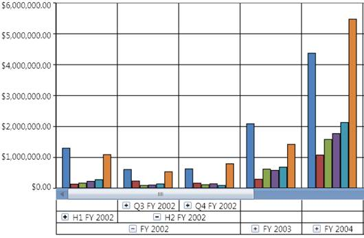

While binding hierarchical dimensions (for example, the time dimension could include 3 levels namely Year, Quarter, and Month), the Chart allows you to visualize the data for different levels by using the collapsible labels. This is illustrated in the following screenshot:

Figure 62: OLAP Chart showing the Drill Down feature in the x-axis
A sample, which demonstrates the multiple level Drill-Down feature, is available in the following sample installation location.
..\Syncfusion\<Version Number>\BI\WPF\OlapChart.WPF\Samples\Creating Reports\Reports In Code
See also:
How to toggle the visibility of PrimaryAxisLabelPanel?
 How to show/hide the expanders in an
OlapChart?
How to show/hide the expanders in an
OlapChart?